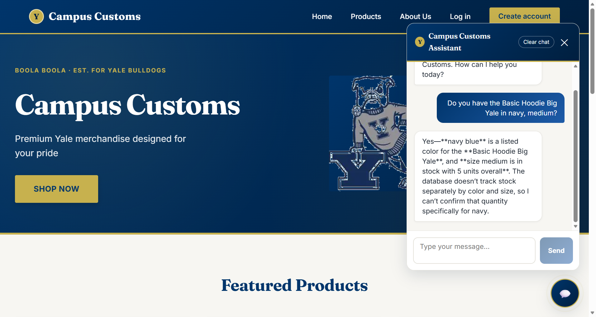
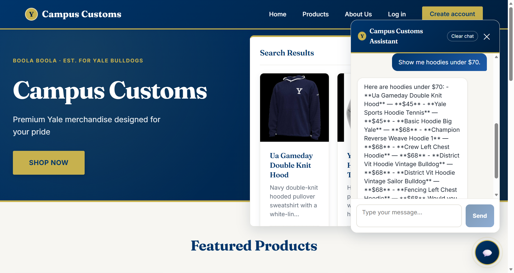
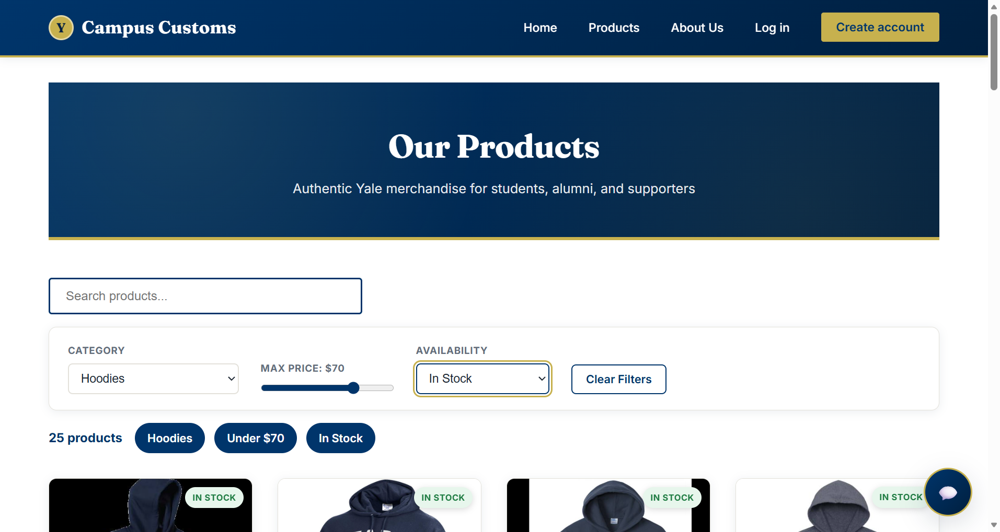

Asked the live assistant "Do you have the Basic Hoodie Big Yale in navy, medium?" It answered that navy blue is a listed color and that size medium has 5 units in stock overall, while explicitly noting the database does not track stock by color+size combination. Independently verified in SQLite: catalogue.colors = ["navy blue", "white"], price = $68.00, and inventory.quantity = 5 for product basic-hoodie-big-yale, size M — the assistant's answer matches exactly and does not overclaim.

Asked "Show me hoodies under $70." The assistant listed 8 real hoodies (Ua Gameday Double Knit Hood $45, Yale Sports Hoodie Tennis $45, Basic Hoodie Big Yale $68, and more), and matching product cards dynamically rendered in a "Search Results" panel without a page reload. Independently verified against SQLite: every listed product and price matches the catalogue table exactly for garment_type LIKE '%hoodie%' AND price <= 70.

Demonstrates the Problem 9 product discovery filters on the Products page: Category = Hoodies, Max Price = $70, Availability = In Stock, combined with the existing search. The page shows "25 products" with active filter badges and an "In Stock" tag on each card. Independently verified in SQLite: filtering catalogue for a hoodie-type garment_type, price <= 70, and total inventory quantity > 0 returns exactly 25 matching products.